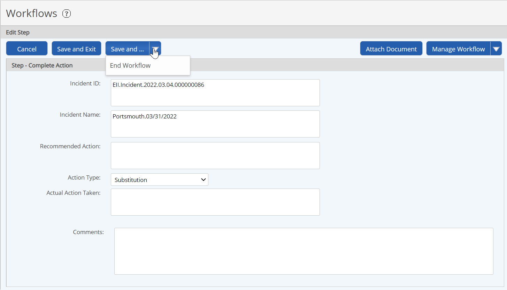

A workflow step may be completed by any one of the following:
Any user who is a member of the role assigned to the step. Users may be assigned to a workflow role individually or as a group. If it is a group assignment, any member of the group may complete the workflow step.
Any user with Manage Workflows right or the Manage Workflows permission on the associated object, or any member of the Administrators group.
To complete a workflow step:
The following steps apply to completing a workflow in the Management System. If you are using the Portal App, please see help instructions for the Portal.
Open the step completion page by one of the following methods:
From an email notification, select the link in the email notification, then sign into the system. See Workflow Notifications. The link will take you to the appropriate form.
From the Portal, click the Form link in the workflow panel. See help for the Portal for further instructions.
From a dashboard in the Management System, click the Step link in the workflow panel.
From the Calendar panel on a dashboard, select a date (red border indicates a workflow or task due date); then select the workflow step link that appears below the calendar.
From the Calendar page, right click the workflow icon and select Complete from the popup menu.
In Workflows Manager (Tasks and Workflows page), right-click the workflow and select Complete.
From the Workflow Overview, select the current step (flagged) from the Steps list.
Complete the fields in the step form as required. The fields on the form depend on the type of workflow and step. Your permissions determine which fields you may edit. Required fields are marked with an asterisk. Fields in bold on the form will be checked for valid values.

Click Save and... and choose the appropriate action to take You can complete the step and send the workflow on, initiate a child workflow, or end the workflow if it is complete. The options depend on the workflow type and on the permissions you have.
If this is the final step of the workflow, or there is no need for any further action, choose End Workflow from the Save and... button to close the workflow.
If you are not ready to send the workflow to the next step, click Save and Exit to save your form entries only. You will need to return to complete the step when you are ready to proceed. Click Cancel to leave the workflow step without saving.
Close the dialog when you are done to return to the form.
To reassign the step to someone else, select Assign Workflow from the Manage Workflows button. See Change Workflow Assignee.
After you choose an action from Save and..., you can choose an assignee for the next step. If you are an assignee to the next step, the next step form will be displayed immediately. If you want to assign the step to someone else, select Assign from the Manage Workflows button.
On the Assign page, the default assignees for the next step are shown. If a group is shown as the default assignee, you can expand the group and choose a specific group member.
If you have additional permissions, you may choose a different user or group than the default assignee. Click the User or Group link to select the assignee from the system. For more information on roles, see Role Memberships
. You may add additional comments at this point.
Select Save and Assign... to complete the step and send the workflow to the next step assignee. Cancel will return you to the step form. Once you complete the step, this step in the workflow will be marked completed and the workflow will proceed to the next step.